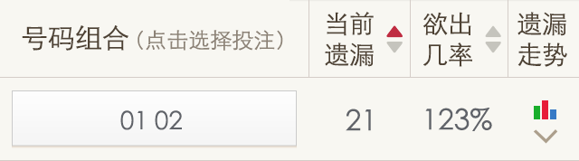
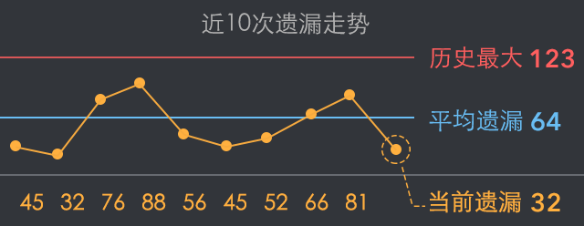
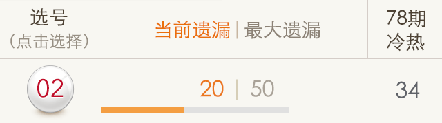

- 1. 什么是遗漏
- 遗漏是指该号码自上次开出以来至本次未出现的期数，比如号码08的遗漏值是9，则表示08已经有9期没开出了。
- 2. 组合遗漏
- 组合遗漏是对该玩法下全部号码组合的遗漏数据的一个全面统计，能方便快速掌握号码组合的出现规律。例如任选二：
-

-
当前遗漏：号码组合“01 02”当前已经有21期没有开出。
欲出几率：当前遗漏÷平均遗漏，数值越高期望出现的几率越大（平均遗漏是该组合所有遗漏值的平均值）。
遗漏走势：用图表方式呈现该号码组合近期开出时遗漏的期数，并与该组合的历史最大遗漏和平均遗漏做对比参照，确保在合适的时机及时出手！（历史最大是该组合在历史上遗漏期数的最大值，不含当前遗漏）。
例如下图表示号码组合最近几次是遗漏了45期开出、接着遗漏了32期开出、再后来遗漏了76期开出……以此类推。
-

- 温馨提醒：因体育彩票管理中心对本彩种每期全部投注号码的可投注数量实行动态控制，如果您的投注方案中包括限号号码，系统将自动撤单返款。
- 3. 号码遗漏
-
号码遗漏是对单个号码的遗漏数据统计，考察该号码的开出情况，方便进行选号投注。
-

-
当前遗漏：该号码自上期开出到本期间隔的期数。
最大遗漏：该号码历史上遗漏期数的最大值。
冷热：该号码在统计周期内的出现次数。